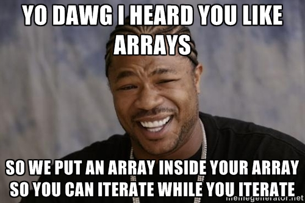

Hello! This week we will be discussing arrays and hashes. These are two of the most useful structures in Ruby, and two of my favorite to use. In this entry, we will compare and contrast the two, with some code snippets included for your reference. We'll begin by going over arrays.
What is an array, you might ask? Good question. In Ruby, an array refers simply to an ordered collection of objects. This could be a collection of words, sentences, numbers, or even a collection of more arrays!

Let's take a look at some examples here - first, a simple array of numbers:
array_of_numbers = [37, 23, 12, 14, 16]
cities = ["Chicago", "Oakland", "New York", "Los Angeles", "Baltimore"]
yo_dawg = [ [1, 2, 3], [4, 5, 6], [7, 8, 9] ]
complex_array = [ 7, "this is a sentence", 8.5, [3, 6, 9], "word"]
Let's go over an example of how an array might be useful to you. Take our "cities" array - say you wanted to print each listed city to the screen. You could use the ".each" method (which performs an action on each object in the array) to iterate over the array. To iterate simply means to go through each object in the array and carry out some certain task. Check out the example below:
cities.each do |city|
puts city
end
Chicago
Oakland
New York
Los Angeles
Baltimore
Some of the code may be confusing to you if you're brand new to Ruby. Have no fear! The Ruby Docs are a great source of information, and many of your array-related questions can be answered here.
Now let's move on to hashes. When Ruby programmers speak of a hash, we're not referring to a delicous potato-based meal.

Nor are we referring to a semi-legal medicine made from a popular plant. Rather, a hash is another Ruby structure, similar to an array in many ways.
A major difference between an array and a hash, is that a hash refers to a collection of pairs (rather than a collection of objects). These pairs are made up of two parts - a key, and a value. A good way to understand the concept of a hash is to think of it like a dictionary, with the key referring to the word, and the value referring to its definition. In fact, let's create a new hash and call it dictionary.
dictionary = {
"array" => "An ordered collection of objects",
"hash" => "A collection of key-value pairs",
"integer" => "A whole number with no decimal point"
}
Say you wanted to make use of your dictionary hash, in order to get the definition of some Ruby terminology. Here's the syntax you could use to print out the definition of an array:
puts dictionary["array"]
You would get this as your result:
An ordered collection of objects
dictionary.each do |key, value|
puts value
end
An ordered collection of objects
A collection of key-value pairs
A whole number with no decimal point
Again, the Ruby-Docs are a great resource for understanding hashes. That about wraps things up for now, but I encourage you to continue researching these structures on your own - you'll need them if you want to be a successful Ruby programmer!